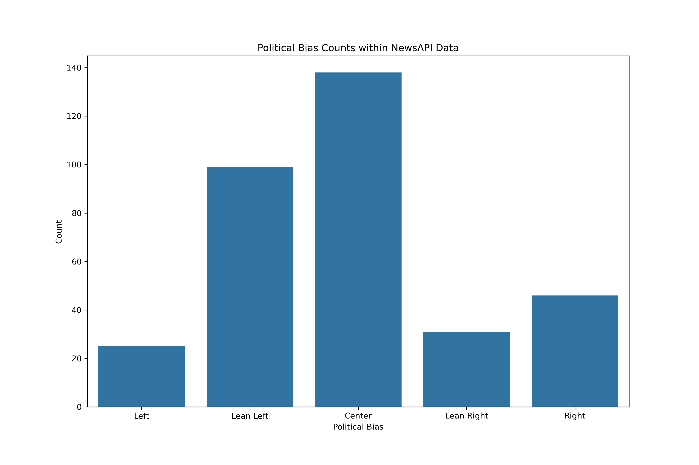
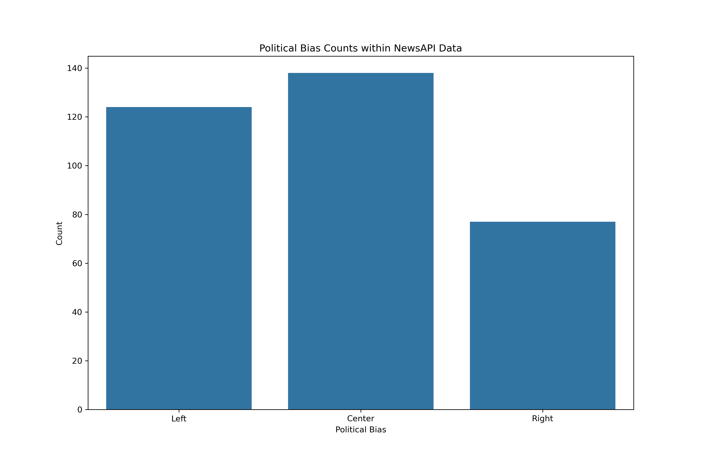
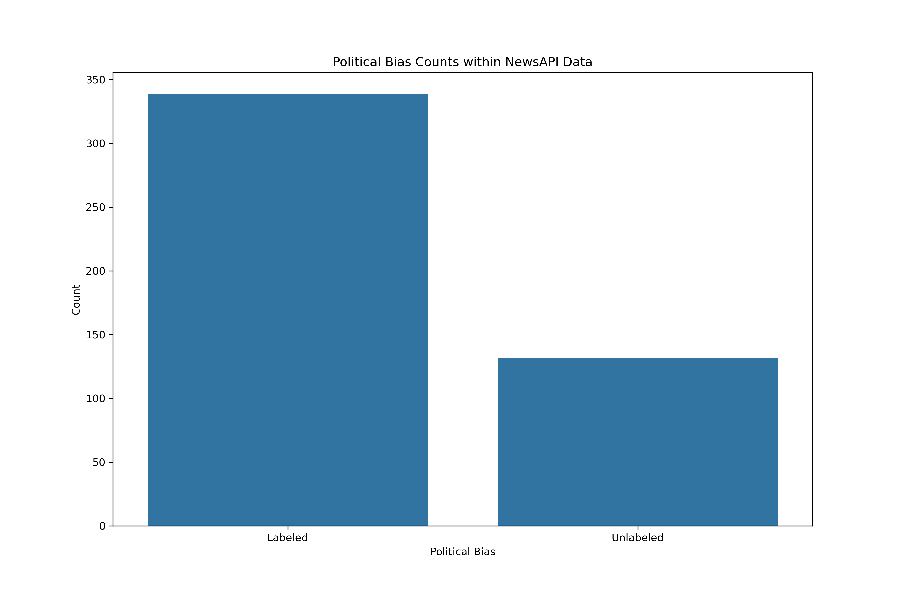
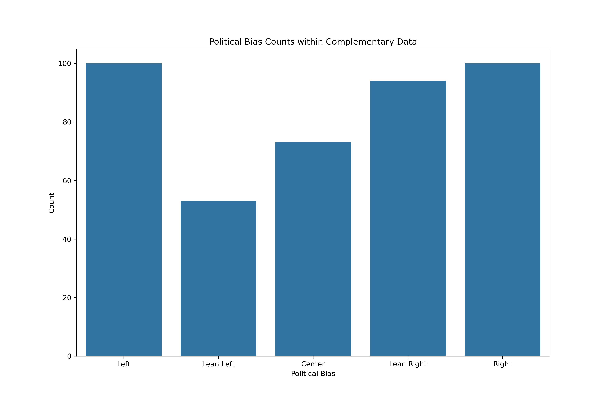
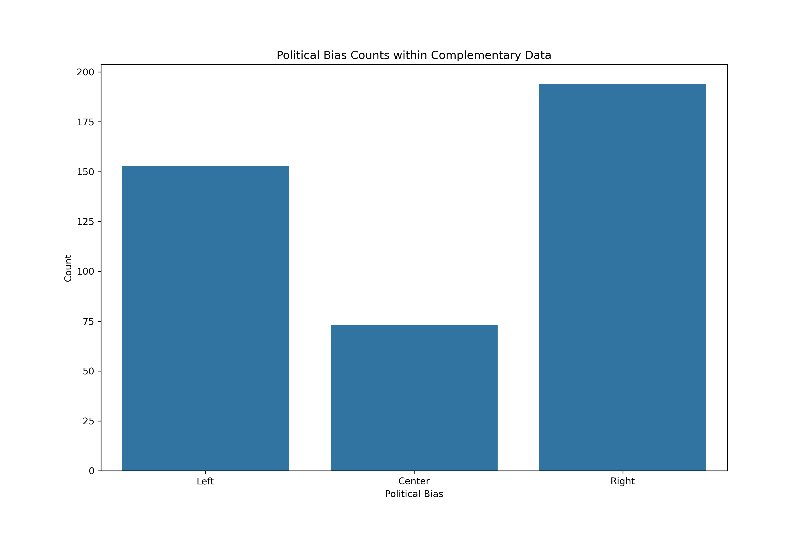

| author | content | description | date | source | title | url |
|---|---|---|---|---|---|---|
| Loading ITables v2.2.5 from the internet... (need help?) |
Data Acquisition - NewsAPI
Introduction
Part of the discussion surrounding Student Loan Forgiveness is reporting done by different news media organizations. These organizations generally align with a certain political bias. With the realization that those on the left tend to support at least some form of student loan relief and those on the right tend to oppose it, it could be fruitful to pair news organizations with their political biases. To achieve this, two main sources of news related data were explored:
NewsAPI Extraction
NewsAPI maintains an application programming interfacae (API) which returns information on articles published around the world. For the scope of this analysis, two search parameters were queried from the API. Articles were gathered using the specific search parameter of student loan forgiveness, as well as a general search parameter of student loans.
The data is initially returned in JSON format, which was then turned into a dataframe and subsequently exported into a csv file.
NewsAPI Extraction Initial Data
Sample of the Raw NewsAPI Data
Columns:
- Author: author of the article, sometimes source of the article
- Content: truncated version of the article itself
- Description: summary of the article
- Date: date the article was published
- Source: news media organization the article was published by
- Title: the title of the article
- URL: the url of the article on the news media organization source
NewsAPI Scraping
One limitation of NewsAPI is that it doesn’t return the content of an article in its entirety. To account for this, numerous web scrapers were built for sources which were both scraping-eligible and appropriate for this analysis. This did reduce the number of sources and articles in the data from NewsAPI, but did result in complete article content. A list of eligible sources and their related scrapers were iteratively called to populate a dataframe with the individual paragraphs from the url associated with the article. Procedurally, the initial scrape through will result in a dataframe where each paragraph from each scrapable article will have its own row.
NewsAPI Scraped Initial Data
Sample of the Raw Scraped Data
| source | url | paragraph | paragraph_num |
|---|---|---|---|
| Loading ITables v2.2.5 from the internet... (need help?) |
Above shows a random sample of 5 rows after the scraping. Paragraphs and paragraph numbers are new compared to the initial extracted data.
Using the source and url columns as keys, these can recombined with the columns from the original extraction of data for future use.
AllSides Bias Data
AllSides is a community-based political bias rating platform for media. Using web scraping, biases for the sources in the scraped data were accumulated. Pages (urls) containing information on sources were scraped and manually found, which were then in turned scraped for their specific bias ratings.
AllSides Initial Data
| source | url | Bias Numeric | Bias Specific | Type | Region | Website |
|---|---|---|---|---|---|---|
| Loading ITables v2.2.5 from the internet... (need help?) |
Columns:
- Source: Source as listed in AllSides
- URL: link to the rating page in AllSides
- Bias Numeric: numeric version of the bias, from -6 to +6 (left to right, respectively)
- Bias Specific: categorically binned version of the bias
- Type: news media, etc.
- Region: regional location and coverage area of the news media organization
- Website: home website of the news media organization
Cleaning and Merging
Thus far, raw data from an API and an array of web scraping functions has been gathered. This can now be combined together to create potential labels for the complete articles associated with the NewsAPI extraction. However, some data cleaning should be performed first.
Cleaning Strategy
NewsAPI Extraction:
- author
- duplicate authors from same article removed
- email addresses and links removed
- stripped of leading, trailing, and multiple spaces
- if author is None then the entry from the source column is used in place
- line breaks removed
- description
- text before and including delimiters removed (i.e. delimiter could be “Date and Location –”)
- content
- ignored in lieu of scraping the entire itself
NewsAPI Scraping Extraction:
- paragraph
- blank paragraphs removed
- non-breaking space characters removed
- stripped of leading, trailing, and multiple spaces
- all paragraphs of a single article combined post-cleaning
AllSides Bias Ratings: no cleaning was required for this data, however a source-to-source map was created, as some sources were not identical between NewsAPI and AllSides.
Merging Strategy
The data with the completely scraped articles still retained the columns for source and url. Using those, the cleaned extraction columns can be merged in as well as the biases.
This resulted in a dataframe with the following columns:
- source
- url
- article
- source_bias
- Bias Numeric
- Bias Specific
- author
- date
- title
- search
Where the text data itself will likely be article, but interesting analyses could be extended by using description or title.
The main label of interest will be Bias Specific, but interesting analyses could hinge upon using source, author, date, or search (topic query parameter).
Sample of the Final Labeled Data
| source | url | article | source_bias | Bias Numeric | Bias Specific | author | description | date | title | search |
|---|---|---|---|---|---|---|---|---|---|---|
| Loading ITables v2.2.5 from the internet... (need help?) |
Specific and Complementary Data
Although many of the sources were able to matched with a political bias, a number were not.
Normally, missing data is either interpolated in some manner or simply removed. However, a goal of the subsequent analyses will be attempting to predict through classification techniques the political biases of articles (and potentially regression for the numeric representation of political bias). The missing label values will therefore be retained overall, but will be removed for training, and then found afterwards.
Additionally, classification is best trained on balanced data. Currently, the data with known biases is spread across five different categories:
- Left
- Lean Left
- Center
- Lean Right
- Right
It could, however, be combined into three labels:
- Left
- Center
- Right



In either the three or five category models, more data could be beneficial. Sources labeled with political biases from the AllSides data was done for the media outlet overall. In other words, the sources should have indicators of bias regardless of topic queried. Therefore, to gather more training data, articles from the top three most frequent sources across each of the five categories was gathered following the same methodologies as above. Although it does adhere specifically to the topic of student loan forgiveness, it could be a complementary training source for political bias.
Note that in the case the complementary data did have duplicate articles contained within the topic-specific data, these articles were removed.
The complementary data could provide the additional spread of labels:


Code Links
- NewsAPI Functions Script: functions related to extracting and scraping NewsAPI Data
- NewsAPI Application Script: application of NewsAPI Functions Script
- AllSides Media Bias Functions Script: functions related to extracting and scraping AllSides data
- AllSides Media Bias Application Script: application of AllSides Media Bias Application Script
- Labeling News Sources Script: script to append the AllSides Media Bias labels
- NewsAPI Cleaning Script: functions related to cleaning the NewsAPI data
- NewsAPI Cleaning Application Script: application of NewsAPI Cleaning Script